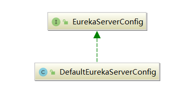
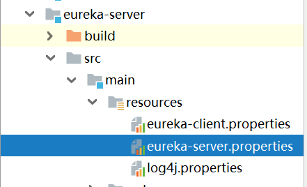
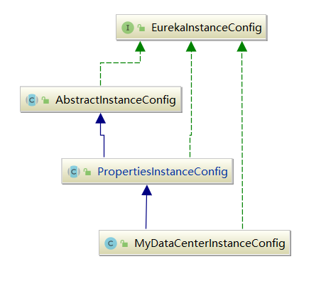
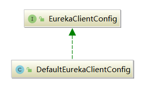

经过上一章的讲解，各位应该对Eureka Server启动的整体流程有了一个初步的了解。本章，我们来看下整体流程中的配置加载部分。在整个启动流程中，与配置相关的主要有四个类：
注意，这里一定要理解一个概念：对于一个Eureka-Server来说，它既是一个Server，又是一个Eureka-Client，还是一个EurekaInstance。
ConfigurationManager，是一个配置管理器，管理着当前Eureka应用实例的所有配置：
protected void initEurekaEnvironment() throws Exception {
logger.info("Setting the eureka configuration..");
// 使用ConfigurationManager获取配置
String dataCenter = ConfigurationManager.getConfigInstance().getString(EUREKA_DATACENTER);
if (dataCenter == null) {
logger.info("Eureka data center value eureka.datacenter is not set, defaulting to default");
ConfigurationManager.getConfigInstance().setProperty(ARCHAIUS_DEPLOYMENT_DATACENTER, DEFAULT);
} else {
ConfigurationManager.getConfigInstance().setProperty(ARCHAIUS_DEPLOYMENT_DATACENTER, dataCenter);
}
String environment = ConfigurationManager.getConfigInstance().getString(EUREKA_ENVIRONMENT);
if (environment == null) {
ConfigurationManager.getConfigInstance().setProperty(ARCHAIUS_DEPLOYMENT_ENVIRONMENT, TEST);
logger.info("Eureka environment value eureka.environment is not set, defaulting to test");
}
}
ConfigurationManager是一个单例类，用了经典的double check + volatile模式。ConfigurationManager.getConfigInstance()方法，其实就是初始化ConfigurationManager的实例：
public class ConfigurationManager {
static volatile AbstractConfiguration instance = null;
//...
// 双重锁检查实现单例模式
public static AbstractConfiguration getConfigInstance() {
if (instance == null) {
synchronized (ConfigurationManager.class) {
if (instance == null) {
instance = getConfigInstance(Boolean.getBoolean(DynamicPropertyFactory.DISABLE_DEFAULT_CONFIG));
}
}
}
return instance;
}
}
// ConfigurationManager#getConfigInstance
private static AbstractConfiguration getConfigInstance(boolean defaultConfigDisabled) {
if (instance == null && !defaultConfigDisabled) {
instance = createDefaultConfigInstance();
registerConfigBean();
}
return instance;
}
// ConfigurationManager#createDefaultConfigInstance
private static AbstractConfiguration createDefaultConfigInstance() {
ConcurrentCompositeConfiguration config = new ConcurrentCompositeConfiguration();
//...
return config;
}
EurekaBootStrap在启动过程中，会创建Eureka-Server需要的配置——EurekaServerConfig：
protected void initEurekaServerContext() throws Exception {
EurekaServerConfig eurekaServerConfig = new DefaultEurekaServerConfig();
//...
}
EurekaServerConfig是一个接口，定义了各种获取配置的GET方法，它对应的具体实现是DefaultEurekaServerConfig：

我这里列举下EurekaServerConfig的核心方法：
// --------------------------- 请求认证相关 ---------------------------
// 打印访问的客户端名和版本号，配合 Netflix Servo 实现监控信息采集
shouldLogIdentityHeaders();
// --------------------------- 请求限流相关 ---------------------------
// 是否开启请求限流
isRateLimiterEnabled();
// 是否对标准客户端限流。标准客户端通过请求头( header )的 "DiscoveryIdentity-Name" 来判断，是否在标准客户端名集合里
isRateLimiterThrottleStandardClients();
// 标准客户端名集合。默认包含"DefaultClient" 和 "DefaultServer"
getRateLimiterPrivilegedClients();
// 速率限制的 burst size ，使用令牌桶算法
getRateLimiterBurstSize();
// 增量拉取注册信息的速率限制
getRateLimiterRegistryFetchAverageRate();
// 全量拉取注册信息的速率限制
getRateLimiterFullFetchAverageRate();
// --------------------------- 获取注册信息请求相关 ---------------------------
// 是否开启只读请求响应缓存。
// 响应缓存 ( ResponseCache ) 机制目前使用两层缓存策略。优先读取只读缓存，读取不到后读取固定过期的读写缓存
shouldUseReadOnlyResponseCache();
// 只读缓存更新频率，单位：毫秒。
// 只读缓存定时更新任务只更新读取过请求 (com.netflix.eureka.registry.Key)，因此虽然永不过期，也会存在读取不到的情况
getResponseCacheUpdateIntervalMs();
// 读写缓存写入后过期时间，单位：秒
getResponseCacheAutoExpirationInSeconds();
// 租约变更记录过期时长,单位：毫秒。默认值：3 * 60 * 1000 毫秒
getRetentionTimeInMSInDeltaQueue();
// 移除队列里过期的租约变更记录的定时任务执行频率，单位：毫秒。默认值：30 * 1000 毫秒
DeltaRetentionTimerIntervalInMs();
// --------------------------- 自我保护机制相关 ---------------------------
// 是否开启自我保护模式
shouldEnableSelfPreservation();
// 心跳丢失比例，超过该比例后开启自我保护模式
getRenewalPercentThreshold();
// 自我保护模式比例更新定时任务的执行频率，单位：毫秒
getRenewalThresholdUpdateIntervalMs();
// --------------------------- 注册的应用实例的租约过期相关 ---------------------------
// 租约过期定时任务执行频率，单位：毫秒
getEvictionIntervalTimerInMs();
// --------------------------- Eureka-Server远程节点( 非集群 )读取相关 ---------------------------
// Eureka-Server 启动时，从远程 Eureka-Server 读取失败重试次数
getRegistrySyncRetries();
// Eureka-Server 启动时，从远程 Eureka-Server 读取失败等待( sleep )间隔，单位：毫秒
getRegistrySyncRetryWaitMs();
// 是否禁用本地读取不到注册信息，从远程Eureka-Server读取
disableTransparentFallbackToOtherRegion();
// --------------------------- Eureka-Server 集群同步相关 ---------------------------
// 同步应用实例信息最大线程数
getMaxThreadsForPeerReplication();
// 待执行同步应用实例信息事件缓冲最大数量
getMaxElementsInPeerReplicationPool();
// 执行单个同步应用实例信息状态任务最大时间
getMaxTimeForReplication();
// 是否同步应用实例信息，当应用实例信息最后更新时间戳( lastDirtyTimestamp )发生改变
shouldSyncWhenTimestampDiffers();
// Eureka-Server启动时，从远程 Eureka-Server 读取不到注册信息时，多长时间不允许 Eureka-Client 访问
getWaitTimeInMsWhenSyncEmpty();
// Eureka-Server集群节点更新频率，单位：毫秒
getPeerEurekaNodesUpdateIntervalMs() ;
DefaultEurekaServerConfig类默认会读取eureka-server.properties文件中的配置，如果包含环境配置(比如eureka-server-test.properties），则会读取并覆盖同名配置项：

DefaultEurekaServerConfig在构造时会进行初始化，其实就是去加载配置文件：
private static final String ARCHAIUS_DEPLOYMENT_ENVIRONMENT = "archaius.deployment.environment";
private static final String TEST = "test";
private static final String EUREKA_ENVIRONMENT = "eureka.environment";
// 配置文件对象
private static final DynamicPropertyFactory configInstance = com.netflix.config.DynamicPropertyFactory
.getInstance();
// 加载配置文件
private static final DynamicStringProperty EUREKA_PROPS_FILE = DynamicPropertyFactory
.getInstance().getStringProperty("eureka.server.props","eureka-server");
//...
public DefaultEurekaServerConfig() {
init();
}
// DefaultEurekaServerConfig#init
private void init() {
// 环境信息
String env = ConfigurationManager.getConfigInstance().getString(EUREKA_ENVIRONMENT, TEST);
ConfigurationManager.getConfigInstance().setProperty(ARCHAIUS_DEPLOYMENT_ENVIRONMENT, env);
// 配置文件名
String eurekaPropsFile = EUREKA_PROPS_FILE.get();
try {
// 加载配置并保存到内存中
ConfigurationManager.loadCascadedPropertiesFromResources(eurekaPropsFile);
} catch (IOException e) {
// ...
}
}
上述整个构造流程如下：
eureka-server.properties中的配置加载到一个Properties对象中，然后将Properties对象中的配置放到ConfigurationManager中去，此时ConfigurationManager就有了所有server配置；DynamicPropertyFactory中获取配置项值，DynamicPropertyFactory是从ConfigurationManager那儿来的，所以也包含了所有配置项的值；上述代码的核心就是通过ConfigurationManager.loadCascadedPropertiesFromResources()加载配置文件到内存中，我这里省略掉了一些无关代码：
// ConfigurationManager#loadCascadedPropertiesFromResources
public static void loadCascadedPropertiesFromResources(String configName) throws IOException {
Properties props = loadCascadedProperties(configName);
//...
ConfigurationUtils.loadProperties(props, instance);
}
可以看到，其实是将配置读取到一个内部的Properties对象里，通过Properties去加载KV配置文件是一种非常常见的方式：
private static Properties loadCascadedProperties(String configName) throws IOException {
// eureka-server.properties
String defaultConfigFileName = configName + ".properties";
if (instance == null) {
instance = getConfigInstance();
}
ClassLoader loader = Thread.currentThread().getContextClassLoader();
URL url = loader.getResource(defaultConfigFileName);
if (url == null) {
throw new IOException("Cannot locate " + defaultConfigFileName + " as a classpath resource.");
}
// 加载到Properties对象中
Properties props = getPropertiesFromFile(url);
// 加载对应的环境配置，覆盖之前加载的同名属性配置
String environment = getDeploymentContext().getDeploymentEnvironment();
if (environment != null && environment.length() > 0) {
// 默认为eureka-server-test.properties
String envConfigFileName = configName + "-" + environment + ".properties";
url = loader.getResource(envConfigFileName);
if (url != null) {
Properties envProps = getPropertiesFromFile(url);
if (envProps != null) {
props.putAll(envProps);
}
}
}
return props;
}
EurekaInstanceConfig代表着当前Eureka应用实例的配置，例如应用名、应用端口等等，这里的应用指的是Application Consumer 和 Application Provider。
EurekaInstanceConfig也是一个接口，提供了各种获取应用实例配置的GET方法。它的具体实现类是MyDataCenterInstanceConfig：

我这里列举下EurekaInstanceConfig的核心方法：
// 对象编号,需要保证在相同应用名下唯一
String getInstanceId();
// 应用名
String getAppname();
// 应用分组
String getAppGroupName();
// 应用实例是否一注册上就可以开始接收请求，默认false
boolean isInstanceEnabledOnit();
// 应用 http 端口
int getNonSecurePort();
// 应用 https 端口
int getSecurePort();
// 心跳（续约）频率，单位：秒；
// 应用不断按照该频率发送心跳给 Eureka-Server 以达到续约的作用
int getLeaseRenewalIntervalInSeconds();
// 租约过期时间，单位：秒
int getLeaseExpirationDurationInSeconds();
// 虚拟主机名。也可以叫做VIPAddress。
String getVirtualHostName();
// 虚拟安全主机名。也可以叫做 SecureVIPAddress
String getSecureVirtualHostName();
// 元数据( Metadata )集合
Map<String, String> getMetadataMap();
// IP 地址
String getIpAddress();
// 配置命名空间，默认使用eureka
String getNamespace();
EurekaInstanceConfig的构造其实就是子类MyDataCenterInstanceConfig的构造，而MyDataCenterInstanceConfig又调用了父类PropertiesInstanceConfig的构造器：
public class MyDataCenterInstanceConfig extends PropertiesInstanceConfig implements EurekaInstanceConfig {
public MyDataCenterInstanceConfig() {
}
//...
}
PropertiesInstanceConfig会将eureka-client.properties文件中的配置加载到ConfigurationManager中去，然后基于EurekaInstanceConfig对外暴露的接口来进行配置项的读取，同时也提供了所有配置项的默认值：
public abstract class PropertiesInstanceConfig extends AbstractInstanceConfig implements EurekaInstanceConfig {
public PropertiesInstanceConfig(String namespace, DataCenterInfo info) {
super(info);
this.namespace = namespace.endsWith(".") ? namespace : namespace + ".";
appGrpNameFromEnv = ConfigurationManager.getConfigInstance()
.getString(FALLBACK_APP_GROUP_KEY, Values.UNKNOWN_APPLICATION);
// 这里会读取eureka-client.properties文件
this.configInstance = Archaius1Utils.initConfig(CommonConstants.CONFIG_FILE_NAME);
}
}
Archaius1Utils这个工具类内部真正执行了配置文件的读取：
public final class Archaius1Utils {
private static final String ARCHAIUS_DEPLOYMENT_ENVIRONMENT = "archaius.deployment.environment";
private static final String EUREKA_ENVIRONMENT = "eureka.environment";
public static DynamicPropertyFactory initConfig(String configName) {
// 配置文件对象
DynamicPropertyFactory configInstance = DynamicPropertyFactory.getInstance();
// 配置文件名
DynamicStringProperty EUREKA_PROPS_FILE = configInstance.getStringProperty("eureka.client.props", configName);
// 配置文件环境
String env = ConfigurationManager.getConfigInstance().getString(EUREKA_ENVIRONMENT, "test");
ConfigurationManager.getConfigInstance().setProperty(ARCHAIUS_DEPLOYMENT_ENVIRONMENT, env);
// 将配置文件加载到环境变量
String eurekaPropsFile = EUREKA_PROPS_FILE.get();
try {
ConfigurationManager.loadCascadedPropertiesFromResources(eurekaPropsFile);
} catch (IOException e) {
//...
}
return configInstance;
}
}
EurekaClientConfig，包含了与EurekaClient相关的一些配置项，也是通过读取eureka-client.properties里的配置构造出来的。只不过它关注的跟之前的EurekaInstanceConfig是不一样的，主要关注EurekaClient的一些配置项：

我这里列举下EurekaClientConfig的核心方法：
// 从 Eureka-Server 拉取注册表频率，单位：秒
int getRegistryFetchIntervalSeconds();
// 向 Eureka-Server 同步应用实例信息频率，单位：秒
int getInstanceInfoReplicationIntervalSeconds();
// 初始化后，首次向 Eureka-Server 同步应用实例信息的延迟，单位：秒
int getInitialInstanceInfoReplicationIntervalSeconds();
// 轮询获取 Eureka-Server 地址变更频率，单位：秒，默认300
int getEurekaServiceUrlPollIntervalSeconds();
// Eureka-Server 读取超时时间
int getEurekaServerReadTimeoutSeconds();
// Eureka-Server 连接超时时间
int getEurekaServerConnectTimeoutSeconds();
// 获取备份注册中心实现类
// 当 Eureka-Client 启动时，无法从 Eureka-Server 读取注册信息（可能挂了），从备份注册中心读取注册信息
// ps：目前 Eureka-Client 未提供合适的实现。
String getBackupRegistryImpl();
// 允许的所有 Eureka-Server 总连接数
int getEurekaServerTotalConnections();
// 允许的单个 Eureka-Server 总连接数
int getEurekaServerTotalConnectionsPerHost();
// Eureka-Server 的 Port
String getEurekaServerPort();
// Eureka-Server 的 DNS 名
String getEurekaServerDNSName();
// 是否使用 DNS 获取 Eureka-Server 地址集合
boolean shouldUseDnsForFetchingServiceUrls();
// 是否向 Eureka-Server 注册自身服务
boolean shouldRegisterWithEureka();
// 应用关闭时，是否向 Eureka-Server 取消注册自身服务
boolean shouldUnregisterOnShutdown();
// 优先使用相同 Zone 的 Eureka-Server
boolean shouldPreferSameZoneEureka();
// 是否允许被 Eureka-Server 重定向
boolean allowRedirects();
// 是否关闭增量获取注册表
boolean shouldDisableDelta();
// 所在区域Region
String getRegion();
// 获取 Eureka-Client 所在区域( Zone )的 Eureka-Server 服务地址
List<String> getEurekaServerServiceUrls(String myZone);
// 是否过滤，只获取状态为开启( Up )的应用实例集合
boolean shouldFilterOnlyUpInstances();
// Eureka-Server 连接的空闲关闭时间，单位：秒
int getEurekaConnectionIdleTimeoutSeconds();
// 是否从 Eureka-Server 拉取注册信息
boolean shouldFetchRegistry();
// 执行心跳的线程池大小
int getHeartbeatExecutorThreadPoolSize();
// 心跳超时后，延迟重试的时间
int getHeartbeatExecutorExponentialBackOffBound();
// 本地注册表缓存刷新的线程池大小
int getCacheRefreshExecutorThreadPoolSize();
// 本地注册表缓存刷新超时延迟重试的时间
int getCacheRefreshExecutorExponentialBackOffBound();
// 是否同步应用实例状态到 Eureka-Server
boolean shouldOnDemandUpdateStatusChange();
EurekaClientConfig构造时，默认创建DefaultEurekaClientConfig对象：
EurekaClientConfig eurekaClientConfig = new DefaultEurekaClientConfig();
public DefaultEurekaClientConfig(String namespace) {
this.namespace = namespace.endsWith(".") ? namespace : namespace + ".";
// 这里读取eureka-client.properties配置
this.configInstance = Archaius1Utils.initConfig(CommonConstants.CONFIG_FILE_NAME);
// 构造客户端通信相关参数的对象
this.transportConfig = new DefaultEurekaTransportConfig(namespace, configInstance);
}
注意，在构造DefaultEurekaClientConfig时，还创建了一个DefaultEurekaTransportConfig对象，这个对象就是保存了一些网络通信相关的配置：
public class DefaultEurekaTransportConfig implements EurekaTransportConfig {
private static final String SUB_NAMESPACE = TRANSPORT_CONFIG_SUB_NAMESPACE + ".";
private final String namespace;
private final DynamicPropertyFactory configInstance;
public DefaultEurekaTransportConfig(String parentNamespace, DynamicPropertyFactory configInstance) {
this.namespace = parentNamespace == null ? SUB_NAMESPACE : (parentNamespace.endsWith(".")
? parentNamespace + SUB_NAMESPACE
: parentNamespace + "." + SUB_NAMESPACE);
this.configInstance = configInstance;
}
// ...
}
本章，我介绍了Eureka启动过程中的几个核心配置对象。通过阅读源码可以看到，Eureka对这些配置对象的处理思路都是一致的：定义各种配置类接口，然后全部从配置文件读取后保存到内存中，最后统一交给ConfigurationManager管理。